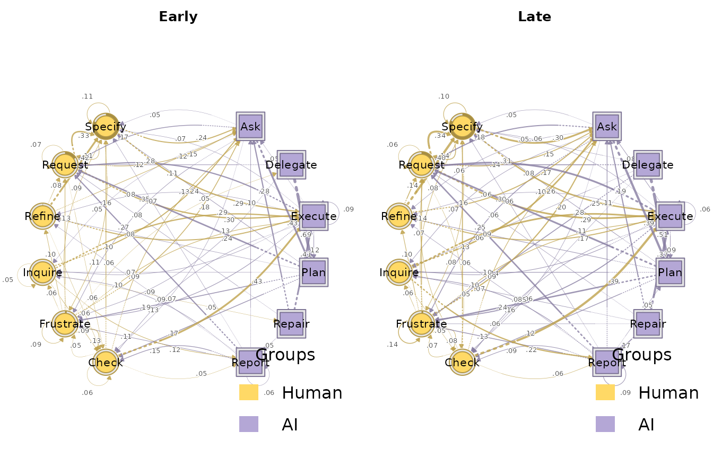
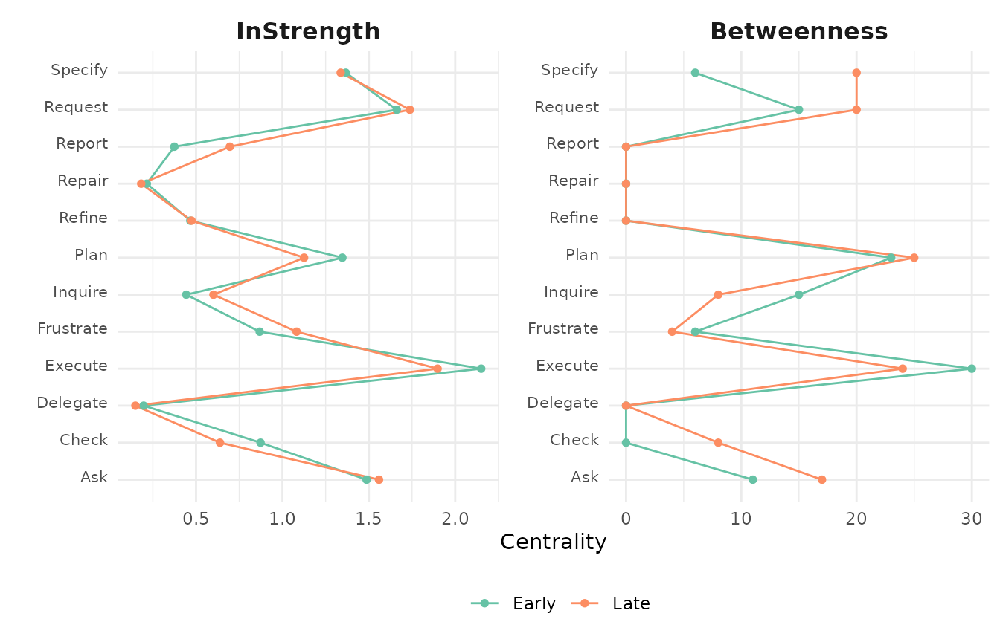
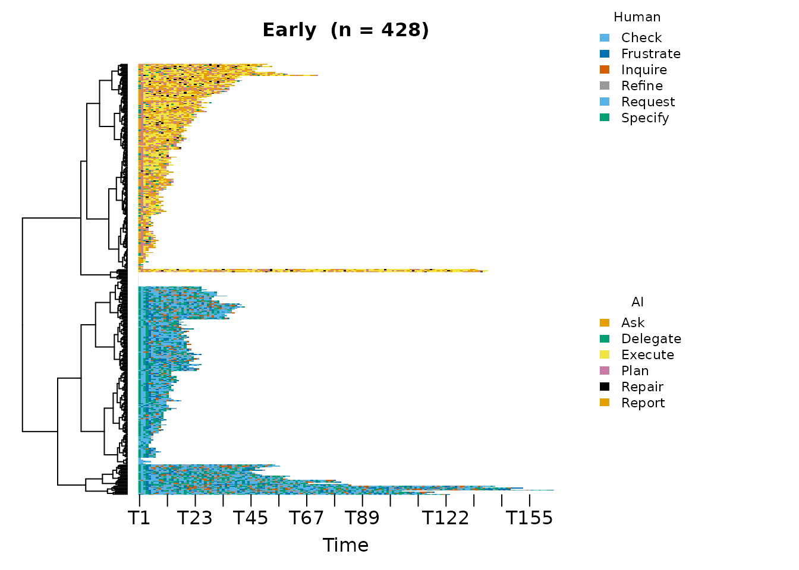
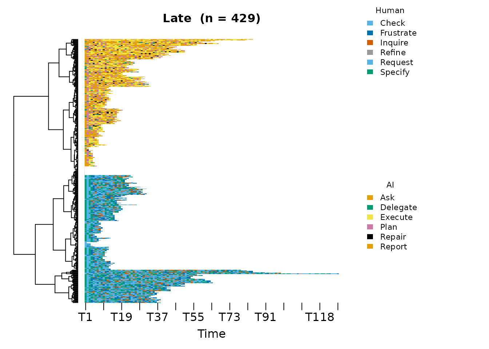
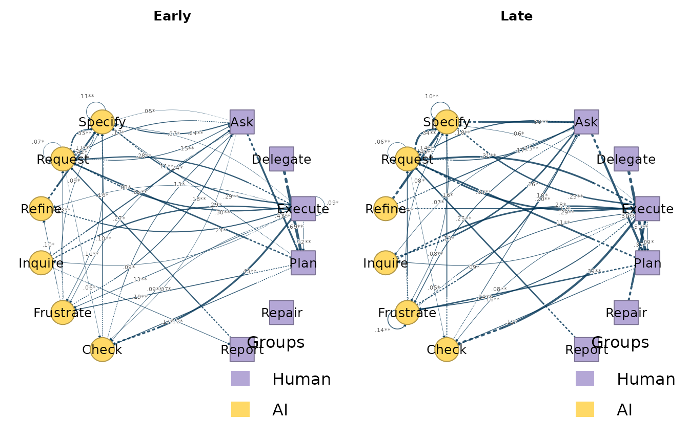
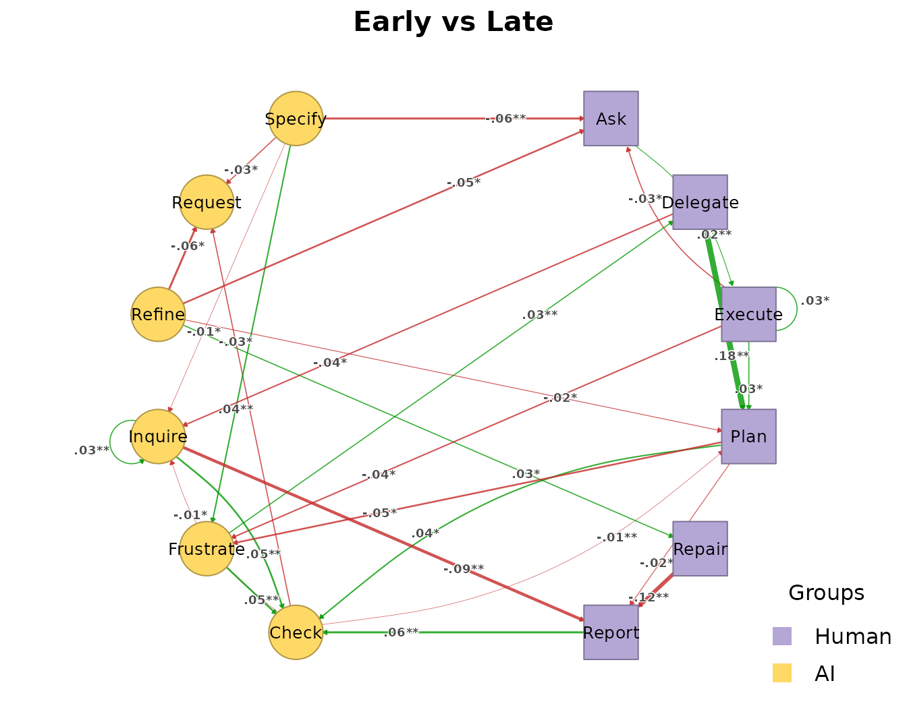

Grouped heterogeneous transition networks
Written by Mohammed Saqr and Sonsoles López-Pernas
Source:vignettes/grouped.Rmd
grouped.RmdMany questions about interactions between actors are comparative. Does the way students work with an AI assistant change over a course? Do teams in an experimental condition hand work to the AI differently from teams in a control condition? Answering them requires one heterogeneous transition network per group of sessions, estimated over the same codes and the same actor partition so that the networks can be set side by side, described with the same measures and assessed with the same procedures.
A grouped heterogeneous transition network is such a set: one network
per cohort, each built from the sessions of that cohort, all sharing the
actor types. build_htna() creates it from a session-level
grouping column, and the other functions of the package accept the
grouped network as it is and work cohort by cohort (or, for comparisons,
pair by pair). This vignette builds, describes and assesses a grouped
network of early and late sessions; the comparison of networks is
treated in depth in the guide Comparing
networks.
Data
human_ai holds the coded turns of 429 sessions in which
programmers worked with an AI coding agent. The variables used here
are:
-
Session and order:
session_id,order_in_session. -
Code and actor type:
code(six human and six AI codes) andactor_type("Human","AI"). -
Cohort:
phase, a factor with levelsEarlyandLate: the sessions ordered by their first date and split in half.
xtabs(~ phase, data = unique(subset(human_ai, select = c(session_id, phase))))
#> phase
#> Early Late
#> 214 215
xtabs(~ phase, data = human_ai)
#> phase
#> Early Late
#> 10170 9177The early cohort has 214 sessions with 10,170 coded events and the late cohort 215 sessions with 9,177 events.
One network per cohort
Passing the name of the cohort column as group gives one
network per cohort, in the order of the factor levels.
grp <- build_htna(human_ai, actor_type = "actor_type", group = "phase")
grp
#> Group Networks (2 groups)
#>
#> Group Nodes Edges Weights
#> Early 12 135 [0.001, 0.689]
#> Late 12 134 [0.001, 0.508]
as.data.frame(summary(grp), what = "actor_pairs")
#> group source_actor target_actor n_edges
#> 1 Early Human Human 35
#> 2 Early Human AI 36
#> 3 Early AI Human 36
#> 4 Early AI AI 28
#> 5 Late Human Human 35
#> 6 Late Human AI 36
#> 7 Late AI Human 36
#> 8 Late AI AI 27Both cohorts use all twelve codes, and their non-zero edges fall in the actor-pair blocks in almost the same way: the only difference is one AI to AI transition that occurs in the early sessions (28 edges) but not in the late ones (27). The cohorts differ, if at all, in the weights of the transitions rather than in which transitions occur.
The networks side by side
plot_htna() draws one network per cohort, titled with
its name, with the same layout and colours.

par(op)Centralities per cohort
The centralities of a grouped network come in one table with a
group column.
centralities_htna(grp, measures = c("InStrength", "Betweenness"))
#> group node actor InStrength Betweenness
#> 1 Early Ask AI 1.487 11
#> 2 Early Check Human 0.873 0
#> 3 Early Delegate AI 0.197 0
#> 4 Early Execute AI 2.150 30
#> 5 Early Frustrate Human 0.868 6
#> 6 Early Inquire Human 0.443 15
#> 7 Early Plan AI 1.347 23
#> 8 Early Refine Human 0.467 0
#> 9 Early Repair AI 0.215 0
#> 10 Early Report AI 0.375 0
#> 11 Early Request Human 1.662 15
#> 12 Early Specify Human 1.367 6
#> 13 Late Ask AI 1.559 17
#> 14 Late Check Human 0.639 8
#> 15 Late Delegate AI 0.149 0
#> 16 Late Execute AI 1.898 24
#> 17 Late Frustrate Human 1.082 4
#> 18 Late Inquire Human 0.601 8
#> 19 Late Plan AI 1.125 25
#> 20 Late Refine Human 0.474 0
#> 21 Late Repair AI 0.183 0
#> 22 Late Report AI 0.696 0
#> 23 Late Request Human 1.738 20
#> 24 Late Specify Human 1.337 20Execute is the code with the most incoming weight in
both cohorts, but its in-strength falls from 2.15 to 1.90. The human
Frustrate gains incoming weight (0.87 to 1.08), as does the
AI Report (0.38 to 0.70), while the human
Check loses it (0.87 to 0.64). The profile plot shows the
two cohorts on the same axis.
plot_centralities(grp, measures = c("InStrength", "Betweenness"))
The sessions of each cohort
A sequence plot per cohort shows the sessions themselves, one row per session and actor, coloured by code.
sequence_plot_htna(grp, type = "heatmap")

Assessing each cohort
Each cohort is estimated from about half of the sessions, so its edges are less certain than those of the pooled network. The bootstrap of a grouped network resamples the sessions of each cohort separately.
boots <- bootstrap_htna(grp, iter = 100, seed = 1)
boots
#> HTNA bootstrap, 2 cohorts
#>
#> --- Early ---
#> Edge Mean 95% CI p
#> -----------------------------------------------
#> Delegate → Plan 0.689 [0.624, 0.781] **
#> Ask → Plan 0.435 [0.398, 0.472] **
#> Check → Execute 0.430 [0.387, 0.470] **
#> Refine → Specify 0.418 [0.342, 0.508] *
#> Plan → Request 0.344 [0.301, 0.377] **
#> ... and 36 more significant edges
#>
#> Bootstrap Network [Transition Network (relative) | directed]
#> Iterations : 100 | Nodes : 12
#> Edges : 41 significant / 135 total
#> CI : 95% | Inference: stability | CR [0.75, 1.25]
#>
#> --- Late ---
#> Edge Mean 95% CI p
#> -----------------------------------------------
#> Delegate → Plan 0.518 [0.419, 0.604] **
#> Refine → Specify 0.412 [0.355, 0.461] **
#> Ask → Plan 0.385 [0.351, 0.427] **
#> Check → Execute 0.384 [0.334, 0.422] **
#> Repair → Execute 0.370 [0.302, 0.446] *
#> ... and 34 more significant edges
#>
#> Bootstrap Network [Transition Network (relative) | directed]
#> Iterations : 100 | Nodes : 12
#> Edges : 39 significant / 134 total
#> CI : 95% | Inference: stability | CR [0.75, 1.25]With 100 resamples, 41 of the 135 early edges and 39 of the 134 late
edges are reproduced within the consistency range. The strongest edge in
both cohorts, Delegate to Plan, has a mean
weight of 0.689 in the early sessions and 0.518 in the late ones, with
intervals (0.624 to 0.781 and 0.419 to 0.604) that do not overlap.
summary(boots) returns the edges of both cohorts in one
table. The plots keep only the significant edges.
op <- par(mfrow = c(1, 2))
plot_htna_bootstrap(boots, display = "significant")
par(op)Centrality stability is computed per cohort in the same way.
stab <- centrality_stability_htna(grp, iter = 100, seed = 1)
as.data.frame(stab)
#> group measure cs
#> 1 Early InStrength 0.9
#> 2 Early OutStrength 0.8
#> 3 Early Betweenness 0.8
#> 4 Late InStrength 0.9
#> 5 Late OutStrength 0.9
#> 6 Late Betweenness 0.8Every coefficient is 0.8 or 0.9, above the recommended 0.5 (Epskamp, Borsboom, & Fried, 2018), so the centralities of each cohort can be interpreted and compared.
A first comparison
The descriptive comparison summarizes how the cohorts differ, overall and within each actor-pair block.
compare_htna(grp)
#> HTNA network comparisons: 1 cohort pair
#>
#> --- Early vs Late ---
#> Pearson correlation of edge weights: 0.959
#> Mean absolute difference: 0.0192
#> source target cells changed mean_diff mean_abs_diff max_abs_diff
#> Human Human 36 35 0.00168 0.0159 0.0631
#> Human AI 36 36 -0.00168 0.0179 0.0922
#> AI Human 36 36 -0.00622 0.0216 0.0571
#> AI AI 36 28 0.00622 0.0212 0.1810The edge weights of the two cohorts correlate at 0.959 and differ by 0.019 on average. The largest single difference, 0.181, lies in the AI-to-AI block. A permutation test asks which differences exceed what reshuffling the sessions between the cohorts produces.
perm <- permutation_htna(grp, iter = 200, seed = 1)
perm
#> Grouped Permutation Test
#> Groups: Early vs Late
#>
#> -- Early vs Late --
#> Permutation Test: Transition Network (relative probabilities) [directed]
#> Iterations: 200 | Alpha: 0.05
#> Nodes: 12 | Edges tested: 135 | Significant: 28
#> Global test (networks differ overall?): M = 2.760 (p = 0.00498) | S = 0.181 (p = 0.0199)With 200 permutations, 28 of the 135 edges differ significantly, and the global test rejects equal networks (p = 0.005 for the sum of absolute differences). The difference network draws the significant edges, green where the early cohort is higher and red where the late cohort is.
plot_htna_diff(perm)
The guide Comparing networks adds the Bayesian comparison and the full comparison tables, and the case study early and late sessions of vibe coding interprets the differences.
Working with the grouped object
Every function of the package accepts the grouped network as it is:
summary(), plot_htna(),
centralities_htna(), sequence_plot_htna(),
bootstrap_htna(), centrality_stability_htna()
and casedrop_reliability_htna() work cohort by cohort;
compare_htna(), permutation_htna(),
bayes_compare_htna() and
sequence_compare_htna() work on the pairs of cohorts. A
single cohort is analyzed on its own by building it from its sessions,
for example
build_htna(subset(human_ai, phase == "Early"), actor_type = "actor_type").
References
Epskamp, S., Borsboom, D., & Fried, E. I. (2018). Estimating psychological networks and their accuracy: A tutorial paper. Behavior Research Methods, 50(1), 195–212. https://doi.org/10.3758/s13428-017-0862-1